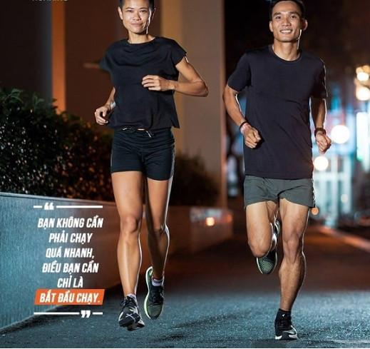
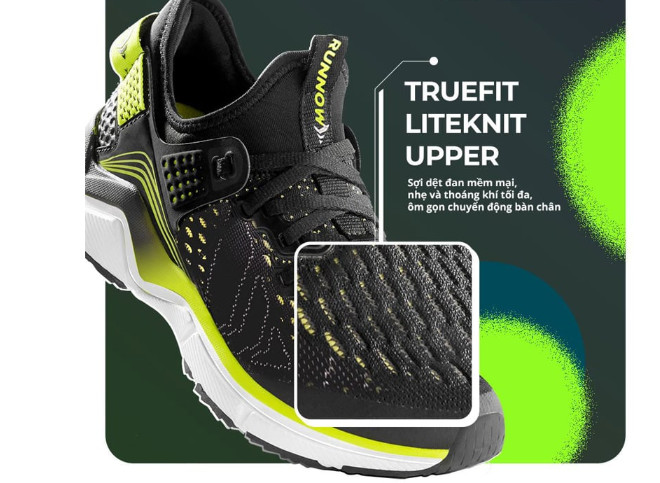

Chạy bộ là hình thức thể thao đơn giản, ít tốn kém nhưng lại mang đến hiệu quả về cả sức khỏe và vóc dáng. Với những người đam mê và yêu thích chạy bộ thì chắc hẳn đã quen với chạy road, một hình thức chạy bộ quen thuộc. Tuy nhiên với những người mới tiếp xúc với bộ môn này chắc hẳn sẽ thắc mắc liên quan. Để giúp bạn hiểu rõ hơn về nó, cùng Biti’s xem ngay thông tin sau đây nhé.
Chạy road hay road running là hình thức chạy bộ trên mặt phẳng bao gồm đường trải nhựa, lối đi, vỉa hè,... Không gian, địa điểm chạy road rất đa dạng nhưng thường có điểm chung là thuận tiện, gần khu vực dân cư, công viên, phố đi bộ, sân vận động,...
Thông thường, những người mới đến với chạy bộ thường sẽ bắt đầu từ chạy road. Bởi vì chạy road đơn giản, bạn chỉ cần xỏ giày vào và chạy thôi. Một ưu điểm khác khi chạy road là bạn có thể tận hưởng không khí trong lành, cảnh quan mỗi khi chạy bộ.

Địa hình: Thường là những địa hình bằng phẳng, đường nhựa, đường bê tông trong công viên, đường trong sân vận động
Kỹ thuật chạy: Không đòi hỏi quá nhiều, chủ yếu là kỹ thuật chạy thông thường
Trang bị: Với các cự ly chạy road ngắn bạn chỉ cần sở hữu một đôi giày chạy bộ
Mức độ nguy hiểm: Tương đối an toàn. Điều bạn cần lo lắng lớn nhất khi chạy road trong thành phố có thể là xe cộ trên đường. Bạn có thể chạy trong công viên hoặc phố đi bộ để tránh phương tiện giao thông
Trải nghiệm: Khá thú vị và dễ dàng tập luyện ban đầu, nhưng về lâu dài nó có thể sẽ khiến bạn nhàm chán. Trải nghiệm chủ yếu của chạy road là tăng cường sức khỏe và thành tích chạy của bản thân
Hoạt động cộng đồng: Rất đông đảo và đa dạng. Các nhóm, câu lạc bộ chạy road hiện nay nở rộ, phát triển với số lượng lớn tại nhiều tỉnh thành trong cả nước. Các runner đầu tư cho việc huấn luyện kỹ thuật nâng cao thành thích bản thân 1 cách chuyên nghiệp
Quy mô phát triển: Cùng với sự phát triển của cộng đồng chạy, các giải chạy bộ trên đường road cũng được tổ chức nhiều hơn.
Mỗi năm Việt Nam có hàng chục giải chạy lớn nhỏ, từ giải phong trào gây quỹ đến giải Marathon chuyên nghiệp được tổ chức với số runner tham gia đông đảo. Có giải lên đến 11000 người tham gia.
Mặc dù chạy road là hình thức đơn giản, dễ thực hiện tuy nhiên để bắt đầu với bộ môn này dễ dàng hơn và tránh đi những chấn thương không đáng có. Bạn nên thuộc lòng một số vấn đề sau:
Nếu như bạn là một người ít vận động trong khoảng hơn một năm đổ lại, hãy gặp bác sĩ để kiểm tra sức khỏe tổng quát trước khi bắt đầu một chương trình chạy bộ. Mặc dù chạy bộ là một thói quen tập luyện tốt để bắt đầu nhưng những người lâu không luyện tập, bác sĩ sẽ giúp bạn đưa ra một số lời khuyên và biện pháp phòng ngừa chấn thương hữu hiệu.
Khi chạy bộ, đôi chân của bạn sẽ tiếp xúc mặt đường với một lực mạnh và liên tiếp. Một đôi giày chạy bộ có lớp thiết kế đặc biệt giúp chịu lực và hấp thu các sang chấn. Từ đó bạn sẽ cảm thấy êm ái và chạy dễ dàng hơn.

Không chỉ vậy, giày chạy bộ được thiết kế với tính năng đặc biệt giúp bảo vệ đôi chân và quá trình chạy đạt được hiệu quả. Có riêng một đôi giày chạy bộ, mỗi lần chạy road bạn sẽ cảm thấy tự tin và thoải mái hơn, từ đó duy trì quá trình luyện tập lâu dài để đạt được mục tiêu tăng cường sức khỏe, giảm cân.
Bạn cần đi bộ trước sau đó hãy từ từ tăng tốc và bắt đầu chạy. Tiếp đó dần dần kết hợp giữa đi bộ và chạy bộ kéo dài mỗi lần chạy theo thời gian chạy. Hãy thử đi bộ một đoạn, chạy một đoạn và đi bộ một đoạn. Hoặc bạn có thể đi bộ trong 2 phút sau đó chạy bộ trong 2 phút và tiếp tục và lặp lại chu kỳ. Khi đã trở nên thoải mái hơn hãy chuyển sang chạy bộ trên tất cả đoạn đường còn lại.
Khi mới bắt đầu chạy bạn có thể sẽ cảm thấy đau nhức. Chạy nhanh quá sớm có thể làm triệu chứng trên tồi tệ hơn. Vì vậy hãy giữ tốc độ vừa phải, để kiểm tra điều đó hãy thử trò chuyện với người bạn đang chạy cùng bạn. Nếu bạn không thể nói chuyện thoải mái, hãy chạy chậm lại. Nếu bạn đang chạy một mình, hãy thử nói chuyện với chính bản thân mình. Mong rằng từ những thông tin mà bài viết đề cập sẽ giúp bạn nắm rõ hơn về chạy road, cũng như có sự chuẩn bị tốt trên đường chạy. Để có thêm nhiều tin tức mới và hữu ích hãy thường xuyên theo dõi blog Sneaker.com.vn nhé.